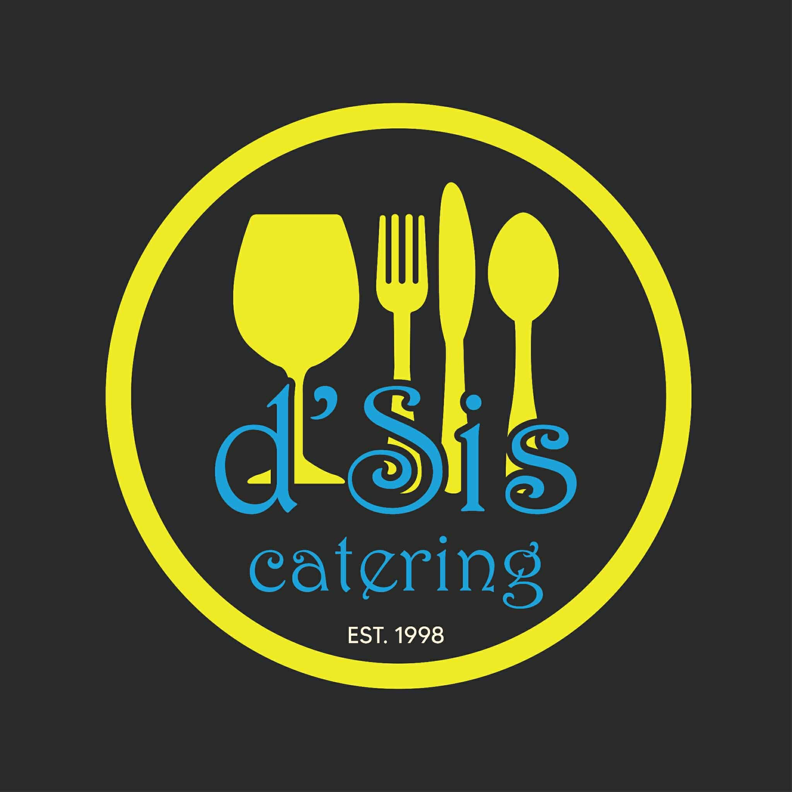

About Us
Delicious moments start here – with D’Sis Catering.
At D’Sis Catering, we believe great food is at the heart of every memorable event. We specialize in delivering flavorful, beautifully presented dishes that cater to a variety of tastes and occasions. From weddings and corporate events to private parties and special celebrations, we bring professionalism, creativity, and care to every table we serve.
Our team is dedicated to using high-quality ingredients and offering a diverse menu tailored to your needs. Whether you’re planning an elegant dinner or a casual gathering, D’Sis Catering ensures a seamless experience from start to finish.
